Beyond deep Learning
Towards biological deep learning?
Credit assignment problem

Backpropagation solves the credit assignment problem by transmitting the error gradient backwards through the weights (\sim synapses).
\Delta W_0 = \eta \, (\mathbf{t} - \mathbf{y}) \times W_1 \times \mathbf{x}^T
But information only goes in one direction in the brain: from the presynaptic neuron to the postsynaptic one. A synapse does know not the weight of other synapses and cannot transmit anything backwards.

Feedback alignment
An alternative mechanism consists of backpropagating the error through another set of feedback weights.

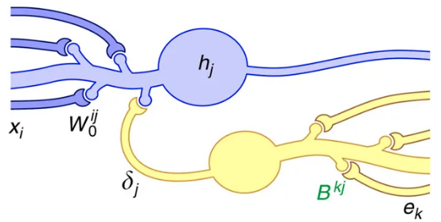
Feedback connections are ubiquitous in the brain, especially in the neocortex. The feedback weights do not need to learn: they can stay random. The mechanism only works for small networks on MNIST until now.

Predictive coding and active inference
Another alternative is predictive coding (Rao and Ballard, 1999), where the role of each layer is to predict the activity of the previous layer by learning a predictive model and computing a prediction error.
The brain does not process its sensory inputs in a purely feedforward manner, it compares it to its own predictions or expectations: you perceive only what you cannot predict. In a hierarchical predictive network, each layer is composed of error and prediction neurons. All learning rules are local, no need for backpropagation. Problem: very slow…

More generally, one can understand brain behavior as:
- learning a generative model of the world, i.e. predicting what is going to happen next.
- minimizing the surprise / uncertainty, i.e. acting in order to improve the model and reach desirable outcomes (rewards).
Active inference proposes that the brain minimizes its free energy through action selection, perception and learning:
\mathcal{F} = D_\text{KL}[ p(x) || q(x)] + H[q(x)]

Although active inference is mostly a framework about Bayesian statistics and neuroscience, deep neural network implementations (using predictive coding networks) start to appear, paving the way for the next-gen AI.
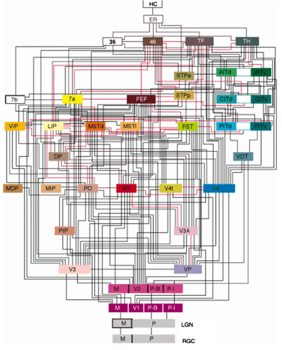
Deep learning architectures are mostly unidirectional, from the input to the output, without feedback connections. The brain is totally differently organized: a big “mess” of interconnected areas processing everything in parallel. The figure above is only for vision, and only for the cerebral cortex: the thalamus, basal ganglia, hippocampus, cerebellum, etc, create additional shortcuts. Is the complex structure of the brain just a side effect of evolution, or is it the only possible solution? Inductive bias: the choice of the architecture constrains the functions it can perform / learn.
Neural dynamics
The artificial neuron has no dynamics, it is a simple mathematical function:
y = f( \sum_{i=1}^d w_i \, x_i + b)
If you do not change the inputs to an artificial neuron, its output won’t change. Time does not exist, even in a LSTM: the only temporal variable is the frequency at which inputs are set.
Biological neurons have dynamics:
- They adapt their firing rate to constant inputs.
- They continue firing after an input disappears.
- They fire even in the absence of inputs (tonic firing).
These dynamics are essential to information processing in recurrent populations.


Reservoir computing
The concept of Reservoir Computing (RC) was developed simultaneously by two researchers at the beginning of the 2000s.
Herbert Jaeger (Bremen) introduced echo-state networks (ESN) using rate-coded neurons. Wolfgang Maass (TU Graz) introduced liquid state machines (LSM) using spiking neurons.
Jaeger, H. (2001). The “echo state” approach to analysing and training recurrent neural networks. Technical Report.
Maass, W., Natschläger, T., and Markram, H. (2002). Real-time computing without stable states: a new framework for neural computation based on perturbations. Neural computation 14, 2531–60. doi:10.1162/089976602760407955.
An ESN is a set of recurrent units (sparsely connected) exhibiting complex spatiotemporal dynamics.
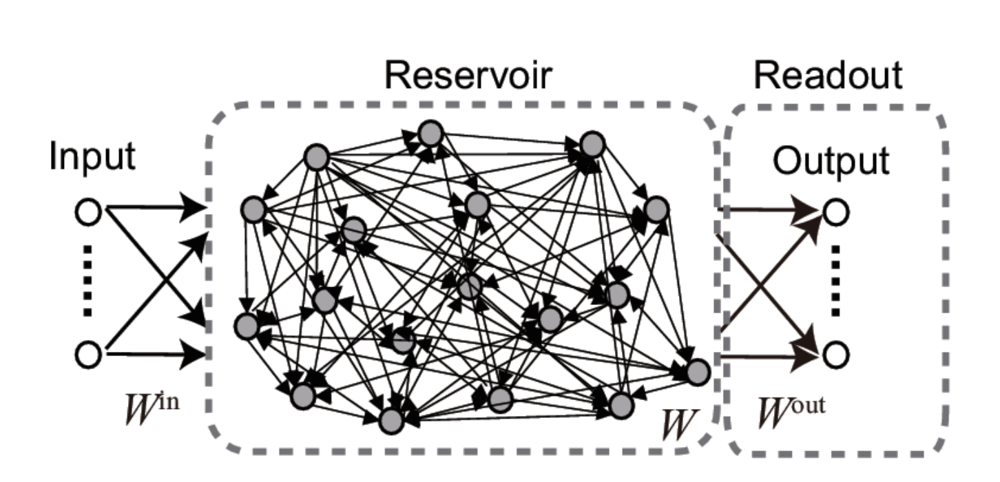
Rate-coded neurons in the reservoir integrate inputs and recurrent connections using an ODE:
\tau \, \frac{dx_j(t)}{dt} + x_j(t) = \sum_i W^\text{IN}_{ij} \, I_i(t) + \sum_i W_{ij} \, r_i(t)
The output of a neuron uses the tanh function (between -1 and 1):
r_j(t) = \tanh(x_j(t))
Readout neurons (or output neurons) transform linearly the activity in the reservoir:
z_k(t) = \sum_j W^\text{OUT}_{jk} \, r_j(t)
The recurrent weights are randomly initialized and fixed throughout learning:
w_{ij} \sim \mathcal{N}(0, \frac{g}{\sqrt{N}})
Supervised learning can be used to train the readout weights to reproduce desired targets.
When g<1, the network has no dynamics: the activity quickly fades to 0 when the input is removed.

For g=1, the reservoir exhibits some transcient dynamics but eventually fades to 0 (echo-state property).
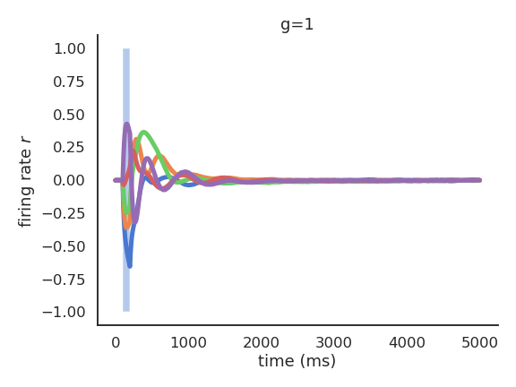
For g=1.5, the reservoir exhibits many stable attractors due to its rich dynamics.
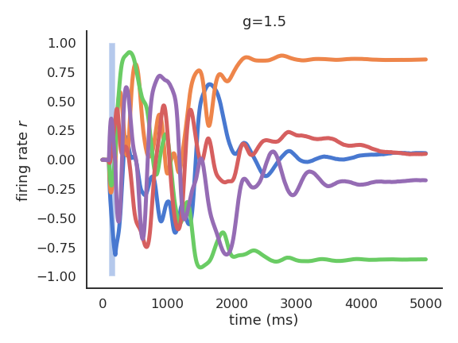
For higher values of g, there are no stable attractors anymore: chaotic behavior.

For g = 1.5, different inputs (initial states) lead to different attractors.
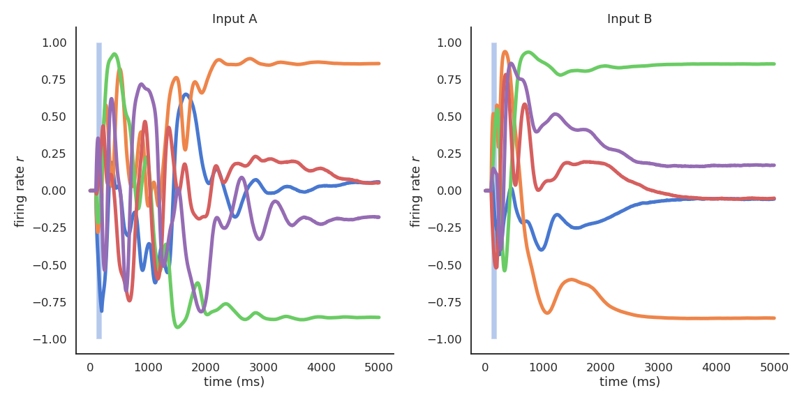
In the chaotic regime, the slightest uncertainty on the initial conditions (or the presence of noise) produces very different trajectories on the long-term.
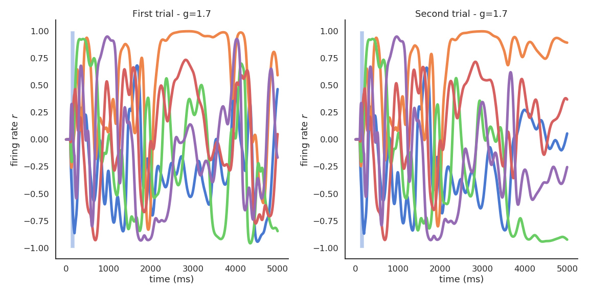
The chaotic regime appears for g > 1.5. g=1.5 is the edge of chaos: the dynamics are very rich, but the network is not chaotic yet.

The Lorenz attractor is a famous example of a chaotic attractor. The position x, y, z of a particle is describe by a set of 3 deterministic ordinary differential equations:
\begin{cases} \dfrac{dx}{dt} = \sigma \, (y - x) \\ \\ \dfrac{dy}{dt} = x \, (\rho - z) - y \\ \\ \dfrac{dz}{dt} = x\, y - \beta \, z \\ \end{cases}
The resulting trajectories over time have complex dynamics and are chaotic: The slightest change in the initial conditions generates different trajectories.
Using the reservoir as input, the linear readout neurons can be trained to reproduce any non-linear target signal over time:
z_k(t) = \sum_j W^\text{OUT}_{jk} \, r_j(t)
As it is a regression problem, the delta learning rule (LMS) is often enough.
\Delta W^\text{OUT}_{jk} = \eta \, (t_k(t) - z_k(t)) \, r_j(t)
from sklearn import linear_model
reg = linear_model.LinearRegression()
reg.fit(r, t)Reservoirs are universal approximators: given enough neurons in the reservoir and dynamics at the edge of the chaos, a RC network can approximate any non-linear function between an input signal \mathbf{I}(t) and a target signal \mathbf{t}(t).
The reservoir projects a low-dimensional input into a high-dimensional spatio-temporal feature space where trajectories becomes linearly separable. The reservoir increases the distance between the input patterns. Input patterns are separated in both space (neurons) and time: the readout neurons need much less weights than the equivalent MLP: better generalization and faster learning. The only drawback is that it does not deal very well with high-dimensional inputs (images).
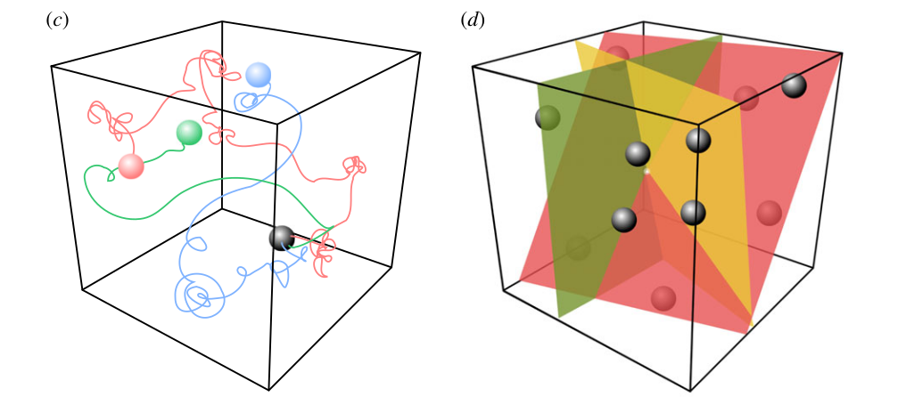
Applications of Reservoir Computing
Forecasting: ESN are able to predict the future of chaotic systems (stock market, weather) much better than static RNN.

Physics: RC networks can be used to predict the evolution of chaotic systems (Lorenz, Mackey-Glass, Kuramoto-Sivashinsky) at very long time scales (8 times the Lyapunov time).

The cool thing with reservoirs is that they do not have to be simulated by classical von Neumann architectures (CPU, GPU). Anything able to exhibit dynamics at the edge of chaos can be used: VLSI (memristors), magnetronics, photonics (lasers), spintronics (nanoscale electronics)…
This can limit drastically the energy consumption of ML algorithms (200W for a GPU). Even biological or physical systems can be used…
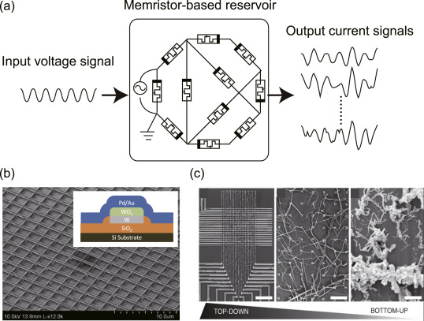
A bucket of water can be used as a reservoir. Different motors provide inputs to the reservoir by creating weights. The surface of the bucket is recorded and used as an input to a linear algorithm. It can learn non-linear operations (XOR) or even speech recognition.
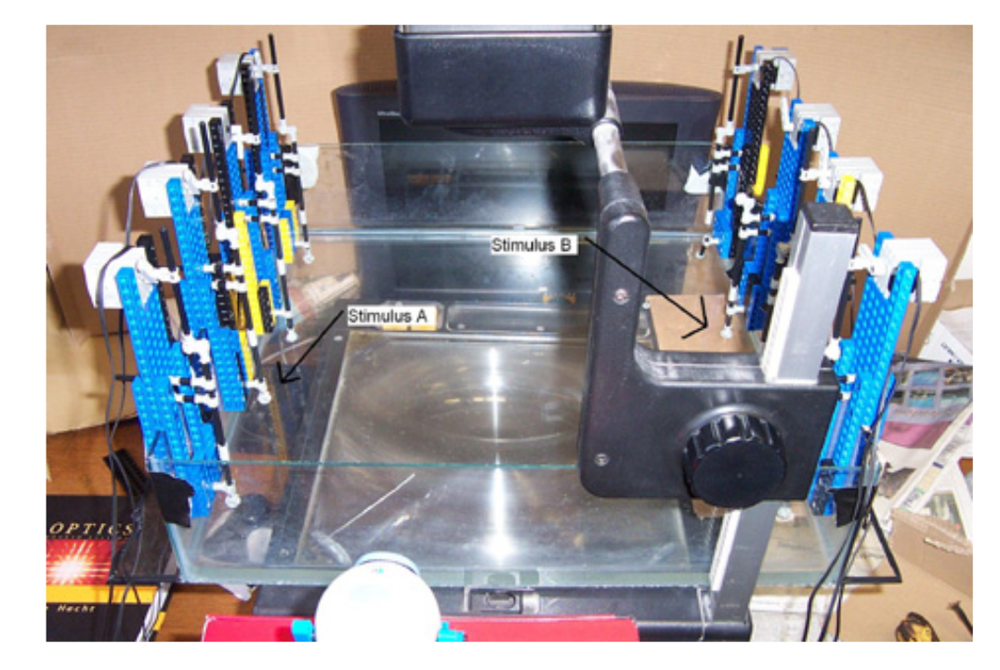

Real biological neurons can be kept alive in a culture and stimulated /recorded to implement a reservoir.
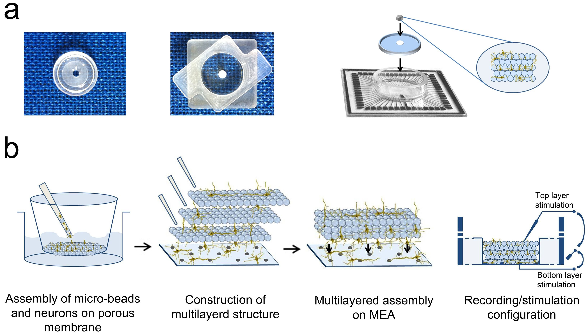
Escherichia Coli bacteria change their mRNA in response to various external factors (temperature, chemical products, etc) and interact with each other. Their mRNA encode a dynamical trajectory reflecting the inputs. By placing them on a microarray, one can linearly learn to perform non-linear operations on the inputs.

Spiking networks and Neuromorphic computing
Spiking networks

The two important dimensions of the information exchanged by neurons are:
- The instantaneous frequency or firing rate: number of spikes per second (Hz).
- The precise timing of the spikes.
The shape of the spike (amplitude, duration) does not matter much. Spikes are binary signals (0 or 1) at precise moments of time. Rate-coded neurons only represent the firing rate of a neuron and ignore spike timing. Spiking neurons represent explicitly spike timing, but omit the details of action potentials.
The leaky integrate-and-fire (LIF) neuron has a membrane potential v(t) that integrates its input current I(t):
C \, \frac{dv(t)}{dt} = - g_L \, (v(t) - V_L) + I(t)
C is the membrane capacitance, g_L the leak conductance and V_L the resting potential. In the absence of input current (I=0), the membrane potential is equal to the resting potential.
When the membrane potential exceeds a threshold V_T, the neuron emits a spike and the membrane potential is reset to the reset potential V_r for a fixed refractory period t_\text{ref}.
\text{if} \; v(t) > V_T \; \text{: emit a spike and set} \, v(t) = V_r \; \text{for} \, t_\text{ref} \, \text{ms.}

Hebbian learning postulates that synapses strengthen based on the correlation between the activity of the pre- and post-synaptic neurons:
When an axon of cell A is near enough to excite a cell B and repeatedly or persistently takes part in firing it, some growth process or metabolic change takes place in one or both cells such that A’s efficiency, as one of the cells firing B, is increased.
Donald Hebb, 1949
Synaptic efficiencies actually evolve depending on the the causation between the neuron’s firing patterns:
- If the pre-synaptic neuron fires before the post-synaptic one, the weight is increased (long-term potentiation). Pre causes Post to fire.
- If it fires after, the weight is decreased (long-term depression). Pre does not cause Post to fire.
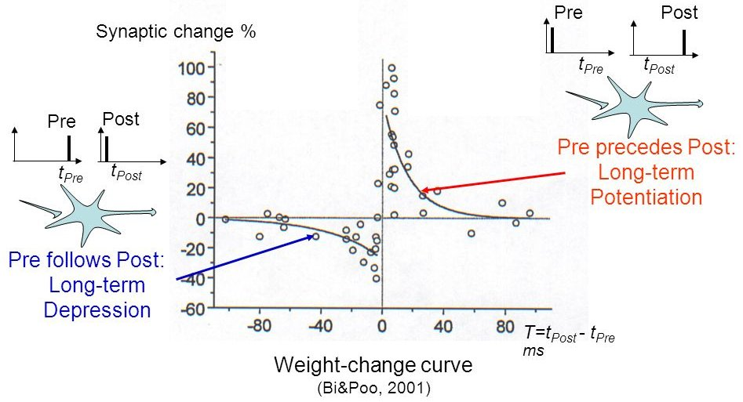
The STDP (spike-timing dependent plasticity) plasticity rule describes how the weight of a synapse evolves when the pre-synaptic neuron fires at t_\text{pre} and the post-synaptic one fires at t_\text{post}.
\Delta w = \begin{cases} A^+ \, \exp - \dfrac{t_\text{pre} - t_\text{post}}{\tau^+} \; \text{if} \; t_\text{post} > t_\text{pre} \\ \\ A^- \, \exp - \dfrac{t_\text{pre} - t_\text{post}}{\tau^-} \; \text{if} \; t_\text{pre} > t_\text{post} \\ \end{cases}
STDP can be implemented online using traces. More complex variants of STDP (triplet STDP) exist, but this is the main model of synaptic plasticity in spiking networks.

Deep convolutional spiking networks
A lot of work has lately focused on deep spiking networks, either using a modified version of backpropagation or using STDP.
The Masquelier lab has proposed a deep spiking convolutional network learning to extract features using STDP (unsupervised learning). A simple classifier (SVM) then learns to predict classes.

The convolutional and pooling layers work just as in regular CNNs (shared weights), except the neurons are integrate-and-fire (IF).
There is additionally a temporal coding scheme, where the first neuron to emit a spike at a particular location (i.e. over all feature maps) inhibits all the others. This ensures selectivity of the features through sparse coding: only one feature can be detected at a given location. STDP allows to learn causation between the features and to extract increasingly complex features.
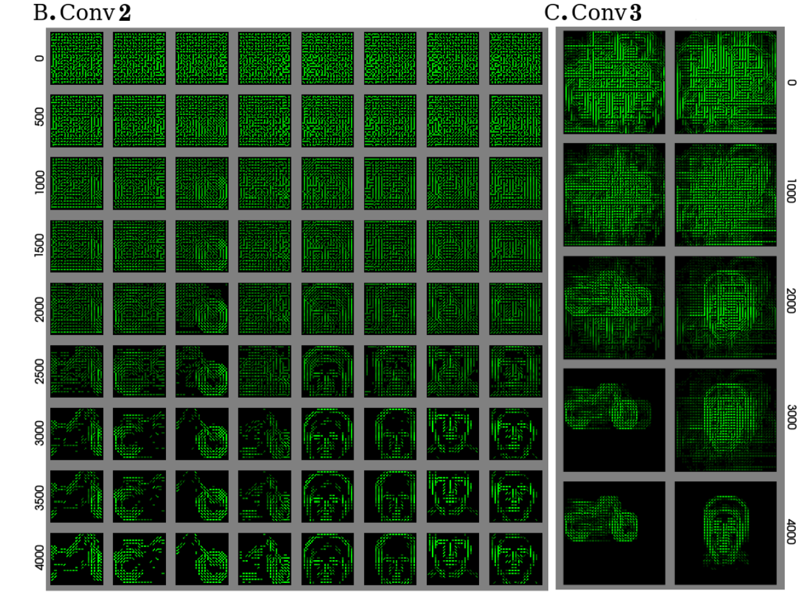
The network is trained unsupervisedly on various datasets and obtains accuracies close to the state of the art:
- Caltech face/motorbike dataset.
- ETH-80
- MNIST

The performance on MNIST is in line with classical 3-layered CNNs, but without backpropagation!
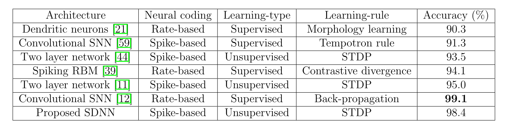
Neuromorphic computing
Event-based cameras are inspired from the retina (neuromorphic) and emit spikes corresponding to luminosity changes.

Classical von Neumann computers cannot cope with the high fps of event-based cameras. Spiking neural networks can be used to process the events (classification, control, etc). But do we have the hardware for that?
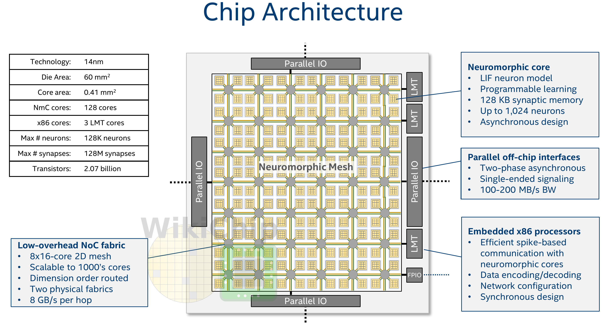
Intel Loihi implements 128 neuromorphic cores, each containing 1,024 primitive spiking neural units grouped into tree-like structures in order to simplify the implementation.
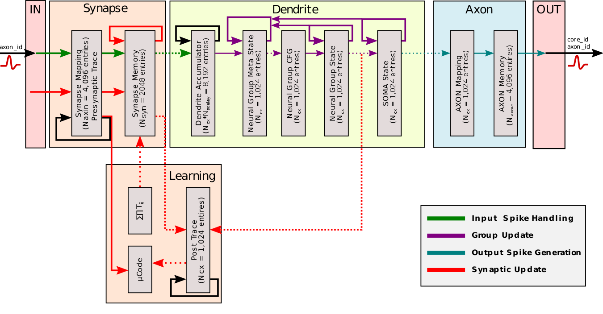
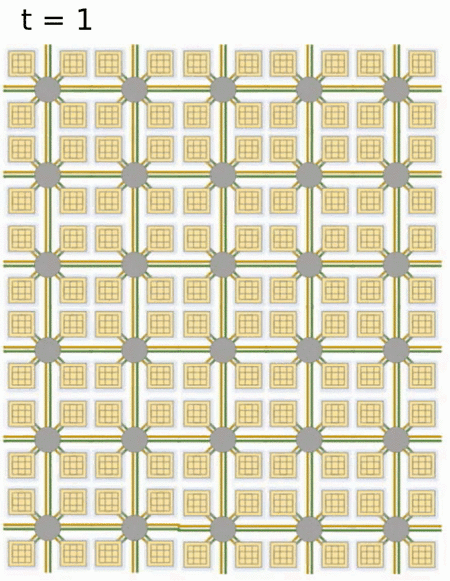
Each neuromorphic core transits spikes to the other cores. Fortunately, the firing rates in a spiking network are usually low (10 Hz), what limits the communication costs inside the chip. Synapses are learnable with STDP mechanisms (memristors).

Intel Loihi consumes 1/1000th of the energy needed by a modern GPU. Finding suitable algorithms would solve the power consumption of current deep learning-based algorithms.
Alternatives to Intel Loihi are:
- FPGA
- IBM TrueNorth
- Spinnaker (University of Manchester and Dresden).
- Brainchip
- Intel Loihi 2 (2022)
The number of simulated neurons and synapses is still very far away from the human brain, but getting closer!
Self-organization
There are two complementary approaches to unsupervised learning:
- the statistical approach, which tries to extract the most relevant information from the distribution of unlabeled data (autoencoders, etc).
- self-organization, which tries to understand the principles of organization of natural systems and use them to create efficient algorithms.
Self-organization is a generic process relying on four basic principles: locality of computations, learning, competition and cooperation.
Self-organization is observed in a wide range of natural processes:
- Physics: formation of crystals, star formation, chemical reactions…
- Biology: folding of proteins, social insects, flocking behavior, brain functioning, Gaia hypothesis…
- Social science: critical mass, group thinking, herd behavior…
A self-organizing system is composed of elementary units (particles, cells, neurons, organs, individuals…) which all perform similar deterministic functions (rule of behavior) on a small part of the available information.
There is no central supervisor or coordinator that knows everything and tells each unit what to do: they have their own rule of behavior and apply it to the information they receive.
The units are able to adapt their behavior to the available information: principle of localized learning. There is no explicit loss function specifying what the system should do: emergence.

The rules of Conway’s Game of Life (1970) are extremely simple:
- A cell is either dead or alive.
- A living cell with less than 1 neighbor dies.
- A living cell with more than 4 neighbors dies.
- A dead cell with 3 neighbors relives.
Despite this simplicity, GoL can exhibit very complex patterns (fractals, spaceships, pulsars). The GoL is an example of self-organizing cellular automata.
Conclusion
Bio-inspired AI has to tackle many challenges.
No backpropagation in the brain, at least in its current form.
Information processing is local to each neuron and synapse.
Complex recurrent architecture (feedback connections).
Neurons have non-linear dynamics, especially as populations (edge of chaos).
Emergence of functions: the whole is more than the sum of its parts
Self-organization. There is no explicit loss function to minimize: the only task of the brain is to ensure survival of the organism (homeostasis).
Embodiment: the brain is part of a body.